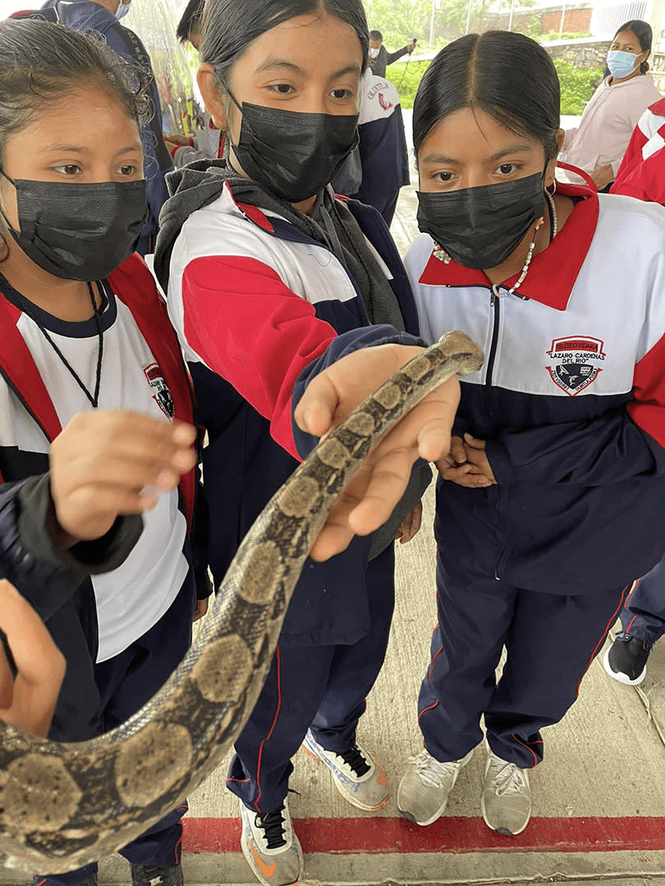

Hola, nosotros somos la Escuela Telesecundaria Lázaro Cárdenas del Río, ubicada en Olintla, un municipio de la Sierra Norte de Puebla. Queremos presentarte nuestro Proyecto Luwa. El nombre de nuestro proyecto enaltece la identidad de nuestra comunidad. En nuestro municipio prevalece la cultura totonaca, por ende se habla dicha lengua. Por tal motivo nuestro proyecto enaltece la identidad de la comunidad, pues luwa significa “serpiente” en totonaco.

